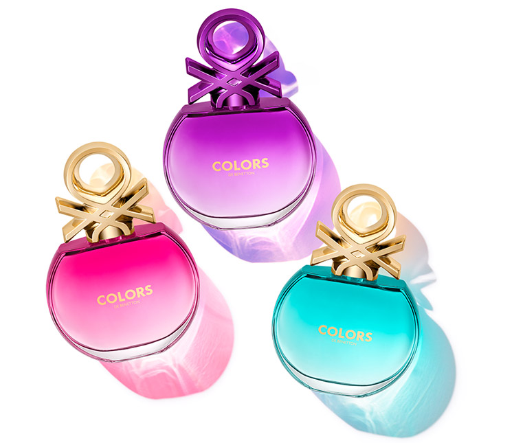

In 1965, the Benettons opened their first store in Belluno[3] and three years after in Paris. The company's core business consists of clothing brands United Colors of Benetton[4] and Sisley.[5] Benetton was an iconic brand in the 1980s and 1990s, but has since struggled to regain this position. In 2000, it ranked 75th in Interbrand's ranking of the best global brands; however, by 2002, it had dropped out of the list.[6] In 2012, Benetton Group was delisted from the stock exchange and is now a fully owned subsidiary of the Benetton family company Edizione holding.[7] In 2017, the group posted a loss of €180 million.[8] Prompted by the heavy losses, Luciano Benetton, who was then 83 years old, returned from retirement as Executive Chairman for the brand.
Revival efforts also included appointing Jean-Charles de Castelbajac as artistic director and re-appointing photographer Oliviero Toscani.[10] As of 2020, United Colors of Benetton has 1,500 employees and uses 25,000 workers through subcontractors.[11] In March 2020, Massimo Renon was named CEO of the company.
Benetton is known for its sports sponsorships, and for its "United Colors" advertising campaign. In 1982, Benetton hired Oliviero Toscani as creative director, which led to a change in advertising focus towards raising awareness for various issues worldwide.[13] In 1984, Toscani photographed the first multiracial ad for the brand.[3] In 1989, Toscani refocused Benetton's advertising strategy under the "United Colors of Benetton" campaign. The campaign's graphic, billboard-sized ads depicted a variety of shocking subjects, including the deathbed scene of a man (AIDS activist David Kirby) dying from AIDS.[14] Another ad featured a bloodied, unwashed newborn baby with umbilical cord still attached. The newborn ad prompted roughly 650 complaints to the British Advertising Standards Authority, which noted in its 1991 annual report that the Benetton baby ad "attracted more complaints than we have ever previously known."[15] A third ad included a black stallion copulating with a white mare,[16] while a fourth advert showed a light-skinned girl with blond hair hugging a dark-skinned boy whose hair was shaped into devil horns.
n 2000, Benetton was included in the reference publication Guinness World Records for the "Most Controversial Campaign."[18] In November 2011, Benetton created the UNHATE Foundation, launching a worldwide communication campaign described as an invitation to leaders and citizens of the world to combat the "culture of hatred."[19] Benetton claimed the campaign was created to serve as its corporate social responsibility strategy.[20] The UNHATE poster series uses altered images of political and religious leaders, such as then-President of the United States Barack Obama and Hugo Chávez, then President of Venezuela, kissing each other.[21][22] Following Vatican protests, Benetton removed an ad purportedly showing Pope Benedict XVI kissing Ahmed Mohamed el Tayeb, the imam of Egypt's Al Azhar mosque